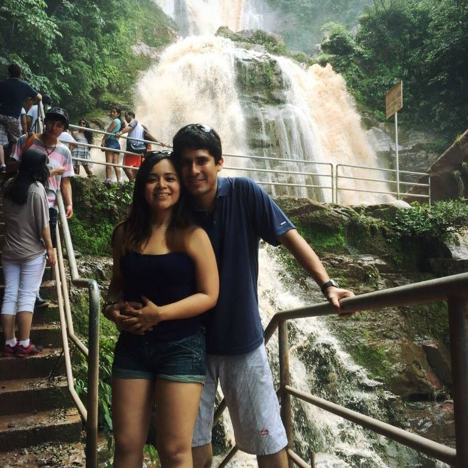

Datos Personales
- Nombres: Luis Enrique
- Apellidos: Tejada Atahualpa
- Lugar de Nacimiento: Lima - Perú
- Fecha de Nacimiento: 05/10/1985
Educación
Experiencia
Información personal
Magister en administración de empresas (MBA), master en dirección logística y gestión comercial (ESIC – España), Ingeniero Pesquero colegiado. Con experiencia en los sectores público y privado, en operaciones y asesoramiento técnico en mejoramiento de procesos productivos, en gestión administrativa y de recursos humanos
Idiomas
- Inglés: Avanzado
- Francés: Básico
- Microsoft Office incluido proyect,visio
- Bizagui